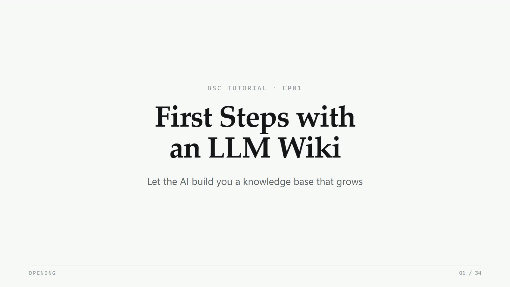
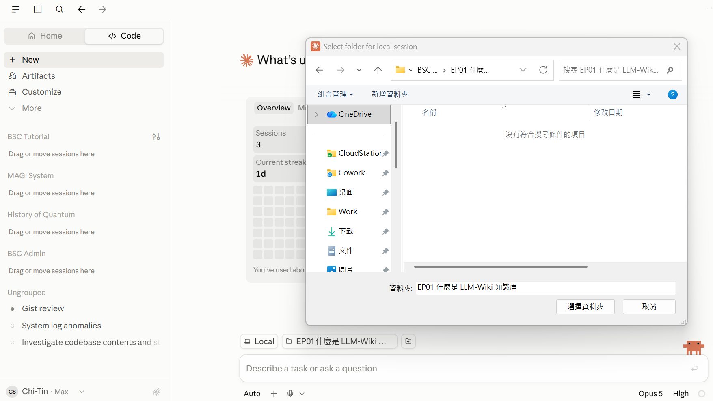
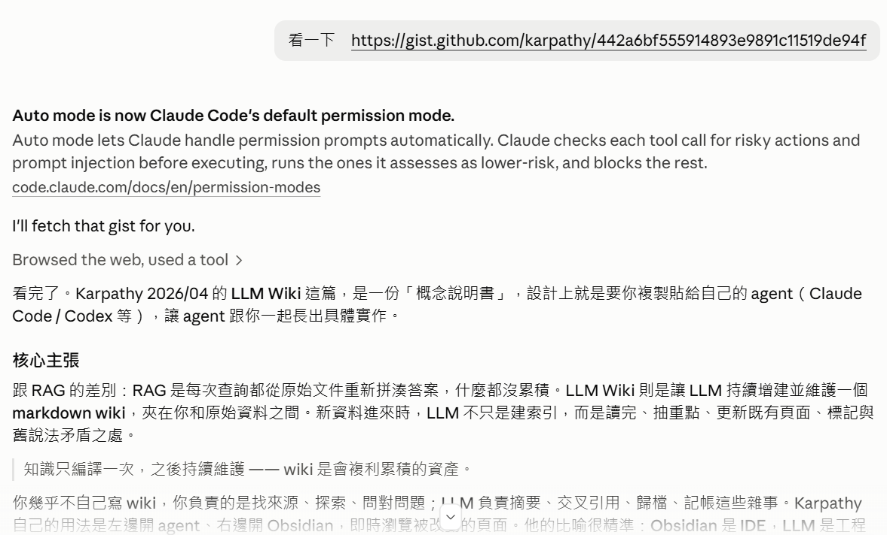
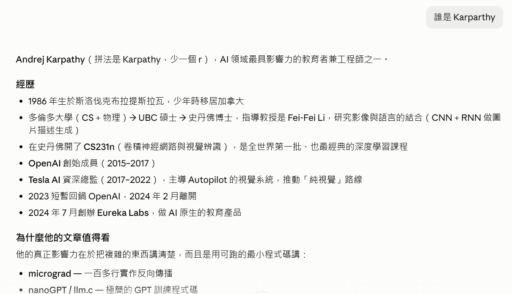
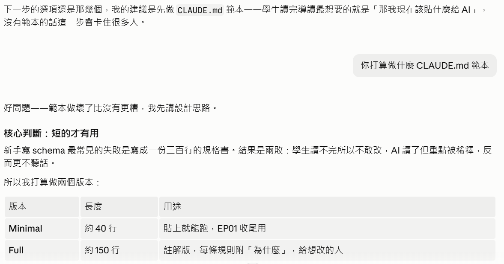
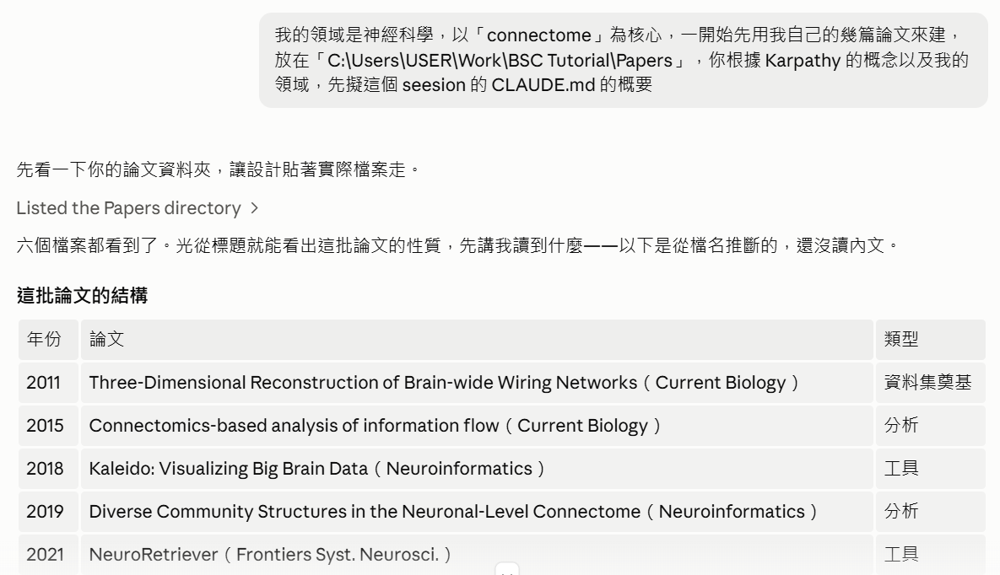
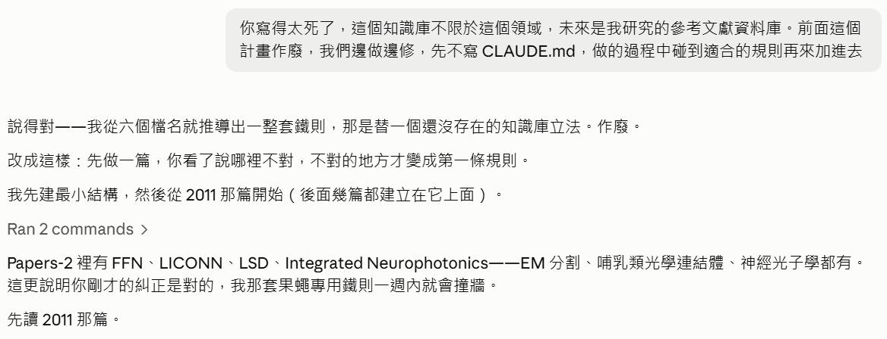
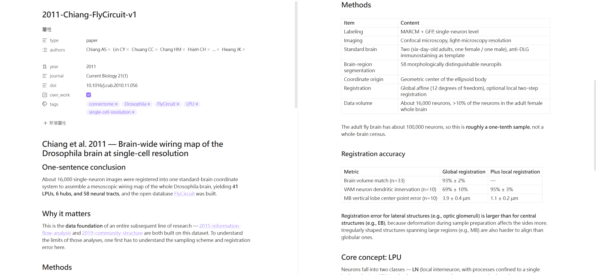
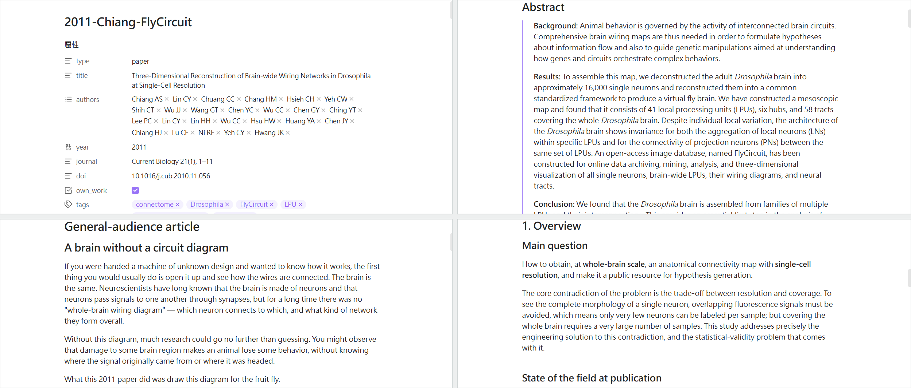

First Steps with an LLM Wiki
From a single gist to the first paper note. This is the complete record of one real working session — every prompt, how the Agent reasoned and acted at each step, and what the screen looked like at the time.

Play the tutorial video · 10 min 38 s · watch on YouTube ↗How to read this page
Open a New Session
In Claude Code, click New. A folder picker appears; choose
EP01 什麼是 LLM-Wiki 知識庫 (“EP01 – What is an LLM Wiki knowledge base”)
as the working folder.
No prompt is typed in this step, but it decides everything that follows.
This folder is the Agent's territory. Every file it can read or write lives inside it. Pick the wrong folder, and every file it creates later ends up in the wrong place.

English transcript · what the screenshot saysclick to collapse
The Claude Code interface itself is in English. Only the Windows folder picker (title bar: “Select folder for local session”) is in Chinese:
- Toolbar
- Organize ▾ · New folder
- Columns
- Name · Date modified
- List area
- “No items match your search.”
- Sidebar
- OneDrive · CloudStation · Cowork · Desktop · Work · Downloads · Documents · Pictures
- Folder:
EP01 什麼是 LLM-Wiki 知識庫= “EP01 What is an LLM-Wiki knowledge base”- Buttons
- [ Select Folder ] [ Cancel ]
Bottom bar of Claude Code: Local · EP01 什麼是 LLM-Wiki … (the folder bound to this session) · “Describe a task or ask a question” · Opus 5 · High.
Hand the Article to the Agent
Take a look at https://gist.github.com/karpathy/442a6bf555914893e9891c11519de94f
Original (zh-TW)看一下 https://gist.github.com/karpathy/442a6bf555914893e9891c11519de94f
- Noticed it didn't have the web-fetch tool loaded, so it used
ToolSearchto loadWebFetchfirst. - Fetched the gist URL with
WebFetch— and got back a summarized version of the page. - Judged that a summary risks distortion, so it fetched again — this time using the URL ending in
/raw, which returns the complete original text. - Reorganized the content (in Chinese) into: the core claim, the three-layer architecture, the three operations, the two special files, and why it works.

Browsed the web, used a tool at the top can be expanded —
click it to see exactly which URL the Agent fetched and what came back. The summary below it
is in Chinese — transcript below; the digest that follows covers the whole post in English.English transcript · what the screenshot saysclick to collapse
Take a look at https://gist.github.com/karpathy/442a6bf555914893e9891c11519de94f
(A system notice in English follows — “Auto mode is now Claude Code's default permission mode…” — not part of the conversation.)
I'll fetch that gist for you.
Browsed the web, used a tool ›
Done reading. Karpathy's LLM Wiki post (April 2026) is a “concept spec” — it is designed for you to copy and paste to your own agent (Claude Code, Codex, etc.) so the agent grows a concrete implementation together with you.
Core claim
The difference from RAG: RAG re-assembles an answer from the raw documents on every query, and nothing accumulates. An LLM Wiki has the LLM continuously build and maintain a markdown wiki that sits between you and the raw sources. When new material arrives, the LLM doesn't just index it — it reads it, extracts the key points, updates the existing pages, and flags where it contradicts older claims.
Knowledge is compiled once and then maintained — the wiki is a compounding asset.
You hardly write the wiki yourself; your job is finding sources, exploring, asking the right questions. The LLM does the summarizing, cross-referencing, filing and bookkeeping. Karpathy's own setup: agent on the left, Obsidian on the right, browsing the edited pages live. His analogy is precise: Obsidian is the IDE, the LLM is the engineer… (cut off)
What Karpathy's post saysclick to expand
A digest of the gist, in our own words. Read the original at gist.github.com/karpathy/….
The core idea
Most people's way of using an LLM on documents is RAG: upload a pile of files, and let the model retrieve relevant chunks at query time to generate an answer. It works, but the model rediscovers the knowledge from scratch every time — nothing accumulates. Ask a subtle question that needs five documents synthesized, and it has to find and stitch them together again each time. NotebookLM, file uploads in ChatGPT, and most RAG systems work this way.
The post proposes something different: instead of only retrieving from raw documents at query time, have the LLM incrementally build and maintain a persistent wiki — a set of structured, interlinked markdown files that sits between you and the raw sources. When a new source arrives, the LLM doesn't just index it for later retrieval; it reads it, extracts what matters, and integrates it into the existing wiki: updating entity pages, revising topic summaries, flagging where the new material contradicts older claims, strengthening or challenging the synthesis that is taking shape. Knowledge is compiled once and then kept current, not re-derived on every query.
The key difference is that the wiki is a persistent, compounding artifact. The cross-references are already there, the contradictions are already flagged, and the synthesis already reflects everything you've read. Every source added and every question asked makes it a little richer.
Division of labor
You rarely, if ever, write the wiki yourself — the LLM writes and maintains all of it. Your job is finding sources, exploring, and asking good questions. The LLM does the grunt work: summarizing, cross-referencing, filing, and the bookkeeping that keeps a knowledge base genuinely useful over time.
Karpathy's own setup is an LLM agent open on one side and Obsidian on the other. The LLM edits as the conversation goes; he browses the results live — clicking links, looking at the graph view, reading updated pages. His analogy: Obsidian is the IDE, the LLM is the engineer, the wiki is the codebase.
Where it applies
- Personal: tracking your own goals, health, mindset, self-improvement — filing journal entries, articles, podcast notes, gradually building a structured picture of yourself.
- Research: weeks or months deep in one topic — papers, articles, reports — building a full wiki and an evolving argument.
- Reading a book: file each chapter as you read; build pages for characters, themes and plot lines and the links between them, and finish with a rich companion wiki. Compare fan wikis such as Tolkien Gateway — thousands of interlinked pages built by volunteers over years; you can build something like it personally, as you read, with the cross-referencing and upkeep handed to the LLM.
- Companies and teams: an internal wiki maintained by the LLM, fed with Slack threads, meeting transcripts, project docs and customer calls, perhaps with humans reviewing the updates. It stays current because the LLM takes on the maintenance nobody on the team wants to do.
- Anything else: competitive analysis, due diligence, trip planning, course notes, hobbies — anywhere you accumulate knowledge over time and want it organized rather than scattered.
The three layers
- Raw sources
- Your curated collection of original documents: articles, papers, images, data files. Immutable — the LLM only reads from it, never modifies it. This is your source of truth.
- The wiki
- A directory of LLM-generated markdown: summaries, entity pages, concept pages, comparisons, overviews, syntheses. The LLM owns this layer entirely: it creates pages, updates them when new sources come in, maintains cross-references, keeps things consistent. You read it; the LLM writes it.
- The schema
- A document (for example
CLAUDE.mdin Claude Code, orAGENTS.mdin Codex) that tells the LLM how the wiki is organized, what the conventions are, and what workflow to follow when ingesting sources, answering questions and maintaining the wiki. This is the key configuration file — it turns the LLM into a disciplined wiki maintainer instead of a general-purpose chatbot. You and the LLM co-evolve it over time.
The three operations
Ingest. You drop a new source into the raw collection and tell the LLM to process it. One example workflow: the LLM reads the source, discusses the key points with you, writes a summary page in the wiki, updates the index, updates the entity and concept pages affected elsewhere in the wiki, and appends an entry to the log. A single source can touch 10 to 15 wiki pages. Karpathy prefers ingesting one source at a time and staying involved — reading the summary, checking the updates, steering what the LLM should emphasize — but you can also batch several sources with less supervision. Develop a workflow that suits your style and write it into the schema for future sessions.
Query. You ask the wiki a question. The LLM finds the relevant pages, reads them, and synthesizes an answer with citations. Answers can take different forms: a markdown page, a comparison table, a slide deck (Marp), a chart (matplotlib), a canvas. The important insight: good answers can be filed back into the wiki as new pages. The comparison you asked for, the analysis, the connection you discovered — all of it is valuable and shouldn't vanish into the chat history. That way your exploration compounds in the knowledge base just as ingested sources do.
Lint. Periodically ask the LLM to run a health check on the wiki, looking for: contradictions between pages, stale claims overturned by newer sources, orphan pages with no inbound links, important concepts that are mentioned but lack a page of their own, missing cross-references, and data gaps that a single web search could fill. The LLM is good at suggesting new questions to investigate and new sources to look for. This keeps the wiki healthy as it grows.
Index and log
Two special files help the LLM (and you) navigate as the wiki grows. They serve different purposes:
index.md is content-oriented. It is a table of contents for everything in the wiki — every page with a link, a one-line summary, and optionally metadata such as dates or source counts, organized by category (entities, concepts, sources, and so on). The LLM updates it on every ingest. When answering a query, the LLM reads the index first to find the relevant pages, then drills in. This works surprisingly well at moderate scale (around 100 sources, a few hundred pages) and removes the need for embedding-based RAG infrastructure.
log.md is chronological. It is an append-only record of what happened when — ingests,
queries, lints. A useful trick: if every entry starts with a consistent prefix (for example
## [2026-04-02] ingest | Article Title), the log can be parsed with simple unix tools —
grep "^## \[" log.md | tail -5 gives the last five entries. The log gives you a timeline of
the wiki's evolution and helps the LLM see what was done recently.
Optional: CLI tools
At some point you may want small tools that let the LLM operate on the wiki more efficiently. The obvious one is a search engine for the wiki — the index file is enough at small scale, but as the wiki grows you'll want real search. qmd is a good option: a local search engine for markdown files with hybrid BM25 / vector search and LLM re-ranking, all running on-device. It has both a CLI (which the LLM can call directly) and an MCP server (so the LLM can use it as a native tool). Or build something simpler — have the LLM write a bare-bones search script when you need one.
Tips and tricks
- Obsidian Web Clipper is a browser extension that turns web articles into markdown. Very handy for getting sources into the raw collection quickly.
- Download images locally. In Obsidian's Settings → Files and links, set the
“attachment folder path” to a fixed directory (for example
raw/assets/). Then in Settings → Hotkeys, search “Download”, find “Download attachments for current file” and bind a hotkey (for example Ctrl+Shift+D). Clip an article, press the hotkey, and all its images land on local disk. Optional but useful — it lets the LLM view and reference the images directly instead of depending on URLs that may die. Note that an LLM can't natively read markdown with embedded images in one pass; the workaround is to have it read the text first, then separately view some or all of the referenced images for extra context. Clunky, but good enough. - Obsidian's graph view is the best way to see the shape of the wiki — what links to what, which pages are hubs, which are orphans.
- Marp is a markdown-based slide format with an Obsidian plugin. Slides can be generated straight from wiki content.
- Dataview is an Obsidian plugin that runs queries over page frontmatter. If your LLM adds YAML frontmatter (tags, dates, source counts) to wiki pages, Dataview can produce dynamic tables and lists.
- The wiki is just a git repo full of markdown files. Version history, branching and collaboration come for free.
Why it works
The tedious part of maintaining a knowledge base isn't the reading, and it isn't the thinking — it's the bookkeeping: updating cross-references, keeping summaries current, noting when new data contradicts old claims, keeping dozens of pages consistent. People abandon wikis because the maintenance burden grows faster than the value. An LLM doesn't get bored, doesn't forget to update a cross-reference, and can handle 15 files in one turn. The wiki stays alive because the cost of maintaining it drops toward zero.
The human's job is to curate sources, direct the analysis, ask good questions and think about what it all means. The LLM's job is everything else.
The idea is related in spirit to Vannevar Bush's Memex (1945) — a personal, curated store of knowledge with associative trails between documents. Bush's vision was closer to this than the web that came later: private, actively curated, with the links between documents as valuable as the documents themselves. The part he couldn't solve was who does the maintenance — and the LLM takes care of that.
Deliberately abstract
The post is deliberately abstract. It describes an idea, not a specific implementation. The exact directory structure, schema conventions, page formats and tools all depend on your domain, your preferences and the LLM you use. Everything above is optional and modular: take what's useful, ignore the rest. Your sources may be text-only, so no image handling; your wiki may be small enough that an index file is all you need, no search engine; you may not care about slides, only markdown pages. The right way to use it is to share it with your LLM agent and build the version that fits your needs together. The post's only job is to convey the pattern.
Fill In the Author's Background
Who is Karparthy
Original (zh-TW)誰是 Karparthy
- Quietly corrected the spelling (it's Karpathy, one r fewer) without dwelling on it.
- Laid out his career: Stanford PhD, the CS231n course, OpenAI founding member, Senior Director of AI at Tesla, founder of Eureka Labs.
- Explained where his influence comes from — teaching complex things through the smallest runnable code: micrograd, nanoGPT, llm.c.
- Listed the terms he coined: Software 2.0, vibe coding, LLM OS.
- Finally tied the background back to the topic: the LLM Wiki post fits his usual style — no implementation, only the pattern.

English transcript · what the screenshot saysclick to collapse
Who is Karparthy
Andrej Karpathy (spelled Karpathy — one r fewer), one of the most influential educator-engineers in AI.
Career
- Born 1986 in Bratislava, Slovakia; moved to Canada as a teenager
- University of Toronto (CS + physics) → master's at UBC → PhD at Stanford under Fei-Fei Li, on combining vision and language (image captioning with CNN + RNN)
- Created CS231n (Convolutional Neural Networks for Visual Recognition) at Stanford — among the first, and the most classic, deep-learning courses in the world
- Founding member of OpenAI (2015–2017)
- Senior Director of AI at Tesla (2017–2022); led the Autopilot vision system, pushed the “vision-only” approach
- Briefly back at OpenAI in 2023; left February 2024
- Founded Eureka Labs in July 2024, building AI-native education products
Why his writing is worth reading
His real influence is in explaining complex things clearly — with the smallest runnable code:
- micrograd — backpropagation in a hundred-odd lines
- nanoGPT / llm.c — minimal GPT training code … (cut off)
Who is Andrej Karpathyclick to expand
One of the most influential educator-engineers in AI. What sets him apart is not that he invented a particular model architecture, but that he got tens of thousands of people to genuinely understand how deep learning works.
Career
- Born 1986 in Bratislava, Slovakia; moved to Canada as a teenager.
- University of Toronto (computer science + physics) → master's at UBC → PhD at Stanford under Fei-Fei Li, working on combining vision and language (image captioning with CNN + RNN).
- Created CS231n (Convolutional Neural Networks for Visual Recognition) at Stanford — one of the first deep-learning courses in the world, and still one of the classics. Its lecture notes are widely used as introductory material to this day.
- Founding member of OpenAI (2015–2017).
- Senior Director of AI at Tesla (2017–2022), leading the Autopilot vision system and pushing the move away from lidar toward a “vision-only” approach.
- Briefly returned to OpenAI in 2023; left in February 2024.
- Founded Eureka Labs in July 2024, building AI-native education products. The LLM Wiki gist (April 2026) was written in this period.
- Joined Anthropic on 19 May 2026, ending the twenty-two-month Eureka Labs chapter, to lead a team “using Claude to accelerate pretraining research”, reporting to pretraining lead Nick Joseph. He said the next few years of work at the LLM frontier would be especially critical, and made clear he had not given up on education and would return to it.
Verified in August 2026. People's circumstances change — check the latest before citing. This is itself the problem a knowledge base has to solve: written facts go stale, so every claim should carry a source and a date.
His method: explain it with the smallest runnable code
His influence comes mainly from a specific way of teaching — not explaining principles with slides, but writing a program small enough to read in full that actually runs.
- micrograd — backpropagation in a hundred-odd lines. Read it and you understand how gradients flow.
- nanoGPT / llm.c — minimal GPT training code, stripping the Transformer training loop down to its skeleton.
- nanochat (2025) — the complete ChatGPT-style training pipeline for roughly 100 US dollars.
- Neural Networks: Zero to Hero — a YouTube course that builds from scratch all the way to GPT.
Terms he coined
- Software 2.0 (2017) — code is no longer human-written logic but weights trained from data.
- vibe coding (2025) — developing purely by feel, forgetting the code exists. The term is everywhere now.
- LLM OS — a framework for imagining the LLM as the kernel of a new kind of operating system.
Why this matters for this course
Knowing who the author is changes how you read what he wrote.
Karpathy's consistent style is to give you the pattern, not the product — he believes the process of building it yourself is where understanding happens. The LLM Wiki post fits this exactly: it deliberately provides no installable tool, only a pattern, and tells you to paste it to your own agent and grow your own version with it.
So don't read it expecting results from following instructions. It is designed to make you make your own decisions.
Ask It to Turn the Article into Teaching Material
Teach me how to build a knowledge base like this. First, translate his LLM Wiki article.
Original (zh-TW)教我如何建立這樣的知識庫。請先翻譯他寫的 LLM Wiki 這篇文章
- Declined to do a sentence-by-sentence translation, on the grounds that a one-to-one translation of the whole piece amounts to reproducing someone else's work.
- But it didn't stop and wait for instructions — it proposed an alternative and carried it out: rewrite with its own structure, covering every concept in the original.
- Wrote the file
01-核心觀念導讀.md(“Core Concepts: A Reader's Guide”), nine sections. The English edition of that file is01-core-concepts.mdin this folder. - Added three things the original doesn't have but teaching material needs: common misconceptions, a checkpoint for the hands-on exercise, and a RAG vs. LLM Wiki comparison table.

English transcript · what the screenshot saysclick to collapse
Structure of this teaching material
| Section | Content |
|---|---|
| Learning objectives | Five checkable abilities |
| 1. The problem first | Start from the pain of RAG, build motivation |
| 2. A different approach | The core shift + a comparison table |
| 3. Three-layer architecture | ASCII diagram, responsibilities layer by layer |
| 4. Three operations | Ingest / Query / Lint |
| 5. Two special files | Why index.md and log.md are kept separate |
| 6. Tooling | Essential vs. nice-to-have, plus two pitfalls with images |
| 7. Why it works | The “maintenance cost” argument + the Memex prehistory |
| 8. Common misconceptions | Four places beginners most often get stuck |
| 9. Hands-on exercise | Directory skeleton + eight steps + a checkpoint |
Ask for the Plan First
After handing over the reader's guide, the Agent volunteered a suggestion for the next step:
The options for the next step are the same as before. My recommendation is to do the
CLAUDE.md template first — after reading the guide, what students want most is
“so what do I paste to the AI now?”, and without a template a lot of people will get stuck here.
That suggestion is where the next prompt comes from. The Agent proposes a next step after finishing a task. You can accept it, overrule it, or first ask exactly what it intends to do — this step takes the third option.
What kind of CLAUDE.md template are you planning to make?
Original (zh-TW)你打算做什麼 CLAUDE.md 範本
- Started with the core judgment: short is what works. The most common beginner failure is a 300-line specification: students can't finish reading it so they don't dare change it, and the AI reads it but the key points get diluted, so it obeys less.
- Proposed two versions: Minimal, about 40 lines (paste and go); Full, about 150 lines (every rule with a “why”).
- Explained three deliberate design choices: workflows written as checklists rather than prose; a “definition of done”; a rule for flagging contradictions.
- Ended by asking one question that would materially change the result: should the template be domain-neutral, or tied to a demo topic?

English transcript · what the screenshot saysclick to collapse
(end of the previous reply) The options for the next step are the same
as before. My recommendation is to do the CLAUDE.md template first — after reading the
guide, what students want most is “so what do I paste to the AI now?”, and without a template a lot
of people will get stuck here.
What kind of CLAUDE.md template are you planning to make?
Good question — a bad template is worse than none, so let me lay out the design thinking first.
Core judgment: short is what works
The most common failure when beginners write a schema is a 300-line specification. Everyone loses: students can't finish reading it, so they don't dare change it; the AI reads it, but the key points get diluted, and it obeys even less.
So I plan to make two versions:
| Version | Length | Purpose |
|---|---|---|
| Minimal | about 40 lines | Paste and go; to close out EP01 |
| Full | about 150 lines | Annotated — every rule with a “why”, for people who want to modify it |
Ask What the Term Means
Explain what CLAUDE.md is
Original (zh-TW)解釋什麼是 CLAUDE.md
- Started with what it is: a plain-text markdown file kept in the project. Claude Code reads it automatically at every startup and treats the contents as standing instructions for that project. The only special thing about it is the filename.
- Gave an analogy: think of the AI as an employee who arrives at work every day with amnesia. Without the file, you re-explain the rules at the start of every conversation; with it, the rules are written on the wall and the employee sees them the moment they walk in.
- Listed the three places it can live: global
~/.claude/CLAUDE.md, the project root, and subdirectories. The layers stack; the project layer wins. - Added the equivalents in other tools: Codex uses
AGENTS.md, Cursor uses.cursorrules. - Two reminders: don't try to write it perfectly in one go, and don't make it long.

English transcript · what the screenshot saysclick to collapse
Explain what CLAUDE.md is
CLAUDE.md is a markdown file kept in the project. Claude Code reads it
automatically at every startup and treats the contents as standing instructions for this project.
It isn't a special format — just plain text. The only special thing is the filename: Claude Code recognizes the name and loads it automatically when it sees it.
An analogy
Think of the AI as an employee who arrives at work every day with amnesia.
Without CLAUDE.md: every time you open a new conversation, you re-explain “what the
rules of this project are, where the files go, how things are named”. Until you want to give up.
With CLAUDE.md: the rules are written on the wall; the employee sees them the moment
they walk in. You just say what needs doing today.
It is the project's constitution, not a memo.
Once you know what it is, the next question is how to write one that works. The six principles below come up again and again in this course.
1. Short is what works
The most common failure is turning it into a 300-line specification. Everyone loses: you can't finish reading it, so you don't dare change it; the AI reads it, but the key points get diluted, so it obeys less. Better forty lines that all get followed.
2. Write workflows as checklists, not prose
“When processing a new source, please read it carefully and integrate it into the existing pages” — written like that, the AI does half the job. Numbered steps, one verb per step, each step checkable: the execution rate is very different.
3. Write down the “definition of done” explicitly
What conditions must one ingest satisfy to count as finished? Pin them down: the summary page exists, the index is updated, at least two links are created, one entry is appended to the log. Without this line the AI will almost certainly skip the log — because it's the step that looks least like “work”.
4. Only write down things that recur
The schema is read by every session. One-off requests belong in the conversation; putting them in the schema just spends attention. The test is simple: will this happen again next week?
5. “Don't do” matters as much as “do”
For example: “the raw folder is read-only, never modify it”; “don't guess content that no source supports — mark it as speculation”. Prohibitions usually prevent disasters better than positive instructions, because they target the mistakes you would only discover afterward.
6. Rules grow out of failures, not out of foresight
The most counter-intuitive principle, and the most important. You cannot know which rules are necessary before you start. The right order is: do it, hit a wall, turn the wall into a rule.
Steps 07 and 08, coming up next, are a complete demonstration of this principle — first see what “legislating in advance” looks like, then see why it gets overturned.
Give It the Domain and Real Data
My field is neuroscience, centered on the “connectome”. To start, build it from a few of my own papers, which are in “C:\Users\USER\Work\BSC Tutorial\Papers”. Based on Karpathy's concept and my field, first draft an outline of the CLAUDE.md for this seesion.
Original (zh-TW)我的領域是神經科學，以「connectome」為核心，一開始先用我自己的幾篇論文來建，放在「C:\Users\USER\Work\BSC Tutorial\Papers」，你根據 Karpathy 的概念以及我的領域，先擬這個 seesion 的 CLAUDE.md 的概要
- Ran a command to look at the actual folder contents first — no designing in a vacuum. This is the key move.
- Read six PDF filenames and organized them into a “year / paper / type” table.
- From the filenames alone, inferred a thirteen-year research trajectory: 2011 build the dataset → 2015 information-flow analysis → 2018 visualization → 2019 community structure → 2021 retrieval → 2024 automatic segmentation.
- Judged that this batch of papers follows the light-microscopy route, not electron microscopy.
- On that basis, drafted a nine-section CLAUDE.md outline, including four “domain hard rules” — and stated explicitly that all of these inferences came from filenames; it had not read the papers.

Listed the Papers directory is an expandable tool-call record.
Every time the Agent uses a tool, it leaves a line like this. Below it, the six papers are laid out
as a table with year, title and type.English transcript · what the screenshot saysclick to collapse
My field is neuroscience, centered on the “connectome”. To start, build it from a few of my own papers, which are in “C:\Users\USER\Work\BSC Tutorial\Papers”. Based on Karpathy's concept and my field, first draft an outline of the CLAUDE.md for this seesion.
Let me look at your papers folder first, so the design follows the actual files.
Listed the Papers directory ›
I can see all six files. The titles alone show what kind of papers these are; here is what I read from them — the following is inferred from the filenames, I have not read the contents yet.
The structure of this batch of papers
| Year | Paper | Type |
|---|---|---|
| 2011 | Three-Dimensional Reconstruction of Brain-wide Wiring Networks (Current Biology) | dataset foundation |
| 2015 | Connectomics-based analysis of information flow (Current Biology) | analysis |
| 2018 | Kaleido: Visualizing Big Brain Data (Neuroinformatics) | tool |
| 2019 | Diverse Community Structures in the Neuronal-Level Connectome (Neuroinformatics) | analysis |
| 2021 | NeuroRetriever (Frontiers Syst. Neurosci.) | tool |
| … (the sixth row, 2024, is below the visible area) | ||
It then drafted a nine-section CLAUDE.md outline. Read carefully what it wrote —
otherwise you won't know what is being overturned in the next step.
- Role and goal — a connectome knowledge-base maintainer, scoped to the whole-brain connectome of the fruit fly (Drosophila).
- Directory structure — eight subdirectories cut by domain:
papers/,datasets/,neuropils/,circuits/,methods/,tools/,metrics/,concepts/. - Four domain hard rules — the section it considered most valuable:
- The data-source type must be labeled (light microscopy vs. EM vs. mesoscale); numbers must never be compared directly across types
- Brain-region names must state which nomenclature they follow; maintain an old-vs-new name mapping
- Graph-theory metrics must be recorded together with their computation parameters
- Dataset versions must be labeled
- Page format — a paper-page skeleton, three-level figure records, tables converted to markdown, formulas in LaTeX.
- Special handling for the user's own papers — tag them
own_work; allowed to record things not written in the paper. - Three workflows — Ingest / Query / Lint, each written as a numbered checklist.
- Lint checks — four generic plus four domain-specific.
- Definition of done — five conditions one ingest must satisfy.
- Log format — a fixed prefix, easy to search from the command line.
It closed with three questions: which brain-region nomenclature to use as the standard, whether to reserve a place for EM datasets now, and where the wiki should live.
The Most Important Step: Overrule It
You've written this far too rigidly. This knowledge base isn't limited to this field — in the future it's the reference library for my research. Scrap the plan above. We'll fix things as we go: don't write CLAUDE.md yet; when we run into a rule that fits during the work, we'll add it then.
Original (zh-TW)你寫得太死了，這個知識庫不限於這個領域，未來是我研究的參考文獻資料庫。前面這個計畫作廢，我們邊做邊修，先不寫 CLAUDE.md，做的過程中碰到適合的規則再來加進去
- Admitted the problem in one sentence: deriving a whole set of hard rules from six filenames is writing laws for a knowledge base that doesn't exist yet.
- Scrapped it outright — no defending, no bargaining.
- Switched to the smallest possible structure: create one
Wiki/folder, no subdirectories for now. - While at it, scanned the neighboring folders and found a
Papers-2— containing FFN, LICONN, LSD and Integrated Neurophotonics: EM segmentation, mammalian light-microscopy connectomics, neurophotonics. - Pointed out that this in turn confirmed the user's correction: the fruit-fly-only hard rules would have hit a wall within a week.

Ran 2 commands is the pair of commands it ran to scan the
folders and discover Papers-2.English transcript · what the screenshot saysclick to collapse
You've written this far too rigidly. This knowledge base isn't limited to this field — in the future it's the reference library for my research. Scrap the plan above. We'll fix things as we go: don't write CLAUDE.md yet; when we run into a rule that fits during the work, we'll add it then.
You're right — I derived a whole set of hard rules from six filenames; that is legislating for a knowledge base that doesn't exist yet. Scrapped.
Instead: do one paper first; you look at it and say what's wrong; only what's wrong becomes the first rule.
I'll set up the minimal structure and start from the 2011 paper (the later ones all build on it).
Ran 2 commands ›
Papers-2 contains FFN, LICONN, LSD, Integrated Neurophotonics — EM segmentation, mammalian light-microscopy connectomics, neurophotonics, all of it. That confirms your correction even more: my fruit-fly-only hard rules would have hit a wall within a week.
Reading the 2011 paper first.
The Agent Solves Its Own Tooling Problem
No new prompt in this step — it's a continuation of the previous one. But it's the part of this whole tutorial most worth studying closely, because it shows in full what the Agent does when it hits an obstacle.
- Tried to read the PDF with the built-in
Readtool. Failed — the environment lacked a component called poppler. - Didn't report “can't do it” and stop. Instead it checked the environment first: the Python version, the installed PDF packages. Result: Python 3.10 present, zero PDF packages.
- Chose and installed PyMuPDF. Reason: one package handles both text extraction and image extraction, which it would need later for the figures.
- Tried to print the PDF text directly. Failed again — Windows' cp950 encoding can't output certain special characters.
- Changed strategy: wrote a small program of its own,
pdftxt.py, which writes the text to a UTF-8 file and reads that back — sidestepping the terminal's encoding limit. - Successfully read 40 pages (11 pages of main text plus supplementary material).
- Wrote the first page,
2011-Chiang-FlyCircuit.md, andlog.md. - Logged the three friction points it met along the way:
Readcan't open PDFs; the cp950 encoding problem; the PDF text layer extracts±as6andµmasmm.
Software and programs used in this step
- InstalledPyMuPDF
- Installed with
pip install pymupdf. Extracts text and embedded images from PDFs. - Wrotepdftxt.py
- Writes each page's text to a UTF-8 text file with page-number separators. Sidesteps the Windows terminal's encoding limit.

Failed to read is the first failure. Further down, the
+9 -0 after Created a file, ran a command, read a file means nine lines were
added — that's pdftxt.py.English transcript · what the screenshot saysclick to collapse
Reading the 2011 paper first.
Failed to read CurrentBiology2011_Three-Dimensional Reconstruction of Brain-wide Wiring Networks in Drosoph… ›
Reading PDFs needs tool support; let me see what the environment has.
Checked Python and PDF libraries ›
No PDF libraries at all. Installing PyMuPDF — one package that does both text and image extraction; it'll be useful later for pulling out the figures and captions too.
Ran 2 commands ›
Encoding problem (Windows cp950) — switching to writing a file and reading it back.
Created a file, ran a command, read a file +9 -0 ›
The PDF is read (40 pages, including supplementary material). Writing the first page now; the structure is deliberately kept loose — you look at it and say what's wrong.
Created 2 files +86 -0 ›
The first page is written: 2011-Chiang-FlyCircuit.md, plus log.md.
Wiki/ is flat for now, no subdirectories — we'll split it when there are enough pages
to get messy.
Three things I ran into along the way (already logged)
1. The Read tool can't read PDFs (the environment lacks poppler); switched to PyMuPDF, now installed … (cut off)
Review the First Version in Obsidian
Open Obsidian and look at the 2011-Chiang-FlyCircuit.md the Agent has just written.
This is what Karpathy's analogy looks like in practice — Obsidian is the IDE, the LLM is the engineer, the wiki is the codebase. The Agent writes on the left; you read on the right.
Three things on screen are worth noticing:
- The frontmatter at the top of the file has become a “Properties” panel, and
tagsare now clickable tags. [[2015-information-flow-analysis]]shows as a link even though that page doesn't exist yet — that's normal; it marks “to be written”.- The markdown tables render as proper tables.

Wiki_Eng/, the same note translated); the original session's note was in Chinese.
The two labels 屬性 / 新增屬性 are Obsidian's own interface (Properties / Add property).Give Specific Revision Instructions
Revise: 1. Include the paper's full title 2. After “Why it matters”, the full original abstract plus a Chinese translation 3. After the abstract, write a general-audience article of about 2,000 characters, aimed at high-school level. The language should be concise and natural, with substantial content; avoid adjectives, exclamations and other embellishment unless necessary, but analogies are fine where they aid understanding 4. After the general-audience article, a technical article (3,000+ characters) aimed at graduate students in the same field. Follow a formal paper structure: “Overview (main question, significance, state of the field at publication)”, “Methods”, “Results”, “Discussion”, “Problems and limitations”, “Future work”. 5. Insert the paper's original figures and tables at the appropriate places (for flowcharts and similar diagrams you may redraw them yourself with mermaid or a similar tool); each must include a translated caption and your own further interpretation
Original (zh-TW)修改： 1. 要有論文完整標題 2. 「為什麼重要」之後，論文摘要全文＋中文翻譯 3. 摘要之後，寫一篇約 2000 字的「科普文」，讀者定位是高中生程度。用語要簡潔自然，實質內容豐富，如非必要盡量少用形容詞、感嘆詞等修飾，但可以適當使用比喻以增進理解 4. 「科普文」之後則是「專業文」（3000 字以上），讀者定位為該論文同領域之研究生程度。需依正式論文結構書寫，包含「概述（主要問題、重要性、發表時之領域現狀）」、「方法」、「結果」、「討論」、「問題與限制」、「未來」。 5. 將論文原圖與表格（如果是流程圖這類圖表、你可以用 mermaid 或類似工具自行繪製）插入適當位置，必須包含圖說翻譯、與你的進一步解讀
- First completed the material — read the rest of the PDF, not just the first few pages.
- Wrote another new program,
pdfimg.py, to extract the PDF's embedded images. It added a “minimum edge length” parameter to filter out small images such as logos and icons. - Extracted 8 images, whose positions matched Figure 1 through Figure 8.
- Renamed them
fig1throughfig8. - Actually opened the images to check their content and confirm the mapping, rather than guessing from page positions alone.
- Rewrote the whole page against the five requirements — and while writing “Problems and limitations”, noticed an inconsistent number in the original paper and flagged it for verification on its own initiative.
Programs used in this step
- Wrotepdfimg.py
- Scans each PDF page for embedded images, filters them by minimum edge length, exports them as separate files, and lists each image's page number and dimensions.

+37 -0 after Created pdfimg.py, ran a command
means the program is 37 lines long.English transcript · what the screenshot saysclick to collapse
Revise: 1. Include the paper's full title 2. After “Why it matters”, the full original abstract plus a Chinese translation 3. After the abstract, write a general-audience article of about 2,000 characters, aimed at high-school level. The language should be concise and natural, with substantial content; avoid adjectives, exclamations and other embellishment unless necessary, but analogies are fine where they aid understanding 4. After the general-audience article, a technical article (3,000+ characters) aimed at graduate students in the same field. Follow a formal paper structure: “Overview (main question, significance, state of the field at publication)”, “Methods”, “Results”, “Discussion”, “Problems and limitations”, “Future work”. 5. Insert the paper's original figures and tables at the appropriate places (for flowcharts and similar diagrams you may redraw them yourself with mermaid or a similar tool); each must include a translated caption and your own further interpretation
A big job. First get the materials ready: read the full text and extract the figures.
Read 2011.txt ›
Materials ready. Extracting figures:
Created pdfimg.py, ran a command +37 -0 ›
8 images extracted; their positions match Figures 1–8. I'll rename them to recognizable names first, then actually look at the images to confirm the content.
The Second Version
Back to Obsidian to review the rewritten version.
The same note now has the full title and citation, the original abstract, a general-audience article for high-school readers, a technical article for graduate students, and the paper's eight original figures. (In the original Chinese session the title and the abstract each also carried a Chinese translation.)
| Section | Content | Size · English edition | Size · Chinese original |
|---|---|---|---|
| Title & abstract | Paper title, citation, DOI; original abstract | — | — (plus translations) |
| General-audience article | High-school level, plain prose, no figures | 1,758 words | 2,516 characters |
| Technical article | Graduate level, six-section formal structure, all eight figures | 5,434 words | 6,748 characters |
| Figures | Figure 1–8, each with the original caption and an interpretation | 8 | 8 |
The session produced the Chinese note; the English edition (Wiki_Eng/) is the same
note translated, which is what the screenshot below shows.

Wiki_Eng/); the original session's note was in Chinese.What this episode teaches
Looked at as a whole, the twelve steps aren't really about “how to write notes”. They're about how to work with a tool that acts on its own.
Three observations about the Agent
- It finds its own toolsCan't read a PDF → inspects the environment, installs a package; the package is awkward to use → writes a program. In this episode it installed one package and wrote two programs, with nobody telling it to.
- It changes strategy on errorTwo failures, two different responses. The first time it switched tools; the second time it switched approach — write to a file, then read it back, to get around the encoding limit.
- It writes the friction downEvery place it got stuck went into
log.md. Those records later become the source of the rules inCLAUDE.md.
About your role
In the whole process you did only four things: set the direction, provide real data, ask what a term means, and overrule a wrong design.
You didn't write a single word of that note. That is the division of labor Karpathy describes — you find sources, explore and ask the right questions; the AI summarizes, cross-references, files and keeps the books.
Of these, the overrule in step 08 matters most. It looks like it threw away the results of the two steps before it; what it actually saved was dozens of pages of rework later.
All the tools used in this episode
| Name | Type | Purpose |
|---|---|---|
| PyMuPDF | Installed package | Extract text and embedded images from PDFs |
| pdftxt.py | Written by the Agent | PDF full text → UTF-8 text file, sidestepping the Windows encoding problem |
| pdfimg.py | Written by the Agent | Extract embedded images from PDFs, filtering out small junk images by size |
| WebFetch | Built-in tool | Fetch web content |
| Read / Write / Edit | Built-in tools | Read and write files, view images |
| Bash / PowerShell | Built-in tools | Run system commands, install packages |
| Obsidian | External software | Browse and review the wiki |
Check yourself
Ten multiple-choice questions. After each answer you immediately see whether you were right, and why. Wrong answers cost nothing — the point is to understand the reasoning.
CLAUDE.md. EP02 turns the
friction and rules accumulated along the way into a real schema — and every rule written then has a
concrete failure as its reason.